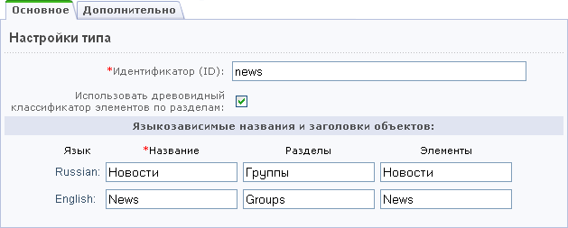

Создание нового типа информационного блока
Чтобы создать новый тип информационного блока, выполните следующие действия:
- Откройте страницу с формой создания типа инфоблоков: Контент > Информационные блоки > Типы информационных блоков.
- Нажмите кнопку Добавить новый тип на контекстной панели.
- Укажите символьный код нового типа информационных блоков в поле Идентификатор (ID). Символьный код представляет собой произвольный набор латинских символов, понятный администратору сайта. Например, символьный код типа Новости – news.
- Для того чтобы инфоблоки создаваемого типа могли содержать разделы и подразделы, установите флаг в поле Использовать древовидный классификатор элементов по разделам. Если инфоблоки данного типа не будут содержать разделы, снимите флажок в этом поле.

- Введите название типа информационного блока для разных языков сайта.
- В поле Разделы укажите названия разделов для инфоблоков с иерархической структурой. Например, информационный блок Новости может состоять из групп.
- Укажите название элементов для инфоблоков данного типа. Например, для типа Новости элементами будут новости.
- Перейдите в закладку Дополнительно.
- Если планируется использовать RSS, то установите флажок в чекбоксе Использовать экспорт в RSS.
- Задайте Индекс сортировки.
- Выберите, если необходимо, файлы для обработки полей данных и файл с формой редактирования элемента.
- Нажмите кнопку Сохранить. После сохранения новый тип инфоблоков будет добавлен в секцию Контент административного меню.